Every discipline is brought to bear for the protectee: open-source, technical, human collection, and various others, working as a single continuous cycle, not separate boxes to check. The method is matched to the inquiry, not the other way around.
Governance-grade risk intelligence and advisory capability designed to protect executives, principals, personnel, and critical assets through continuous intelligence, early threat detection, and structured decision support.
The Protective Intelligence program is delivered through a centralized operations and intelligence function, the coordination point for all monitoring, analysis, advisory, and escalation activity. This ensures unified situational awareness, disciplined decision-making, and controlled execution.

Ongoing surveillance across physical, digital, reputational, and geopolitical threat environments. Monitoring of crime trends, unrest, harassment, and insider risk impacting executives and assets.
Behavioral indicators tracked over time to distinguish noise from a genuinely escalating threat. Targeting analysis and early-warning indicator development before conditions force a response.
Intelligence products built on verified sourcing, not aggregated headlines or automated alerts. Delivered in a format structured for executive decision-making, legal review, and governance use.
Intelligence conditions determine when physical measures are warranted. This structure prevents unnecessary deployment, ensures responses are deliberate and proportional, and supports defensible decision records.
Intelligence products are produced in alignment with ISO 31000 and ISO 22320.
The threat that causes the most damage usually already has a badge. Regent Intel builds insider threat programs grounded in the same detection, analysis, and mitigation frameworks used in U.S. government counterintelligence and security programs -- adapted for the private sector and cleared environments.
Governance charter, senior leadership buy-in, legal and privacy review, reporting structure, and integration with existing security and HR functions. Built to NITTF standards where applicable.
Indicator sets mapped to organizational risk: access anomalies, foreign contact reporting gaps, disgruntlement patterns, and pre-operational security violations. Human indicators, not just technical signatures.
Structured assessment of personnel risk across the lifecycle: pre-employment screening, continuous evaluation triggers, access reviews, and departure protocols. Coordinated with HR, legal, and information security.
Training and awareness that builds a reporting culture without creating a surveillance climate. Employees learn to recognize and report indicators through structured channels with protections for good-faith reporting.
Programs developed in alignment with NITTF minimum standards, NIST SP 800-53, and Executive Order 13587 frameworks.
Counterintelligence is not a government-only discipline. Any organization handling sensitive information, proprietary technology, or cleared personnel faces collection threats from state-sponsored actors, competitive intelligence operations, and insider compromise. We bring the CI framework to the private sector.
Identify collection threats targeting your organization: foreign intelligence services, economic espionage actors, competitive intelligence operations, and insider pathways. Assess vulnerabilities across personnel, information systems, and physical access.
Countermeasures designed to detect, deter, and disrupt collection activity: anomaly detection, elicitation awareness, foreign travel protocols, and controlled information environments. Integrated with TSCM and insider threat programs.
Workforce training tailored to actual threat scenarios: social engineering, online elicitation, conference targeting, and foreign contact reporting. Personnel understand the threat, recognize the approach, and know the reporting channel.
Embed counterintelligence into existing security governance: cleared facility requirements, NISPOM compliance, foreign ownership and influence mitigation, and technology control plan support.
All inquiries are handled with complete confidentiality.